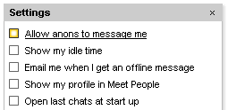
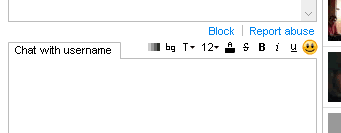
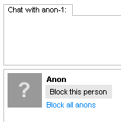
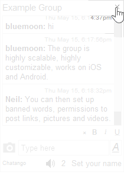

Help: Information for Parents
Privacy Settings
Limit contact from strangers
To limit private messages from people you do not know, log in to Chatango and click Account > Settings.
- Show my profile in Meet People - this option controls whether your profile is shown in the Meet People tab.

When it is not checked, your profile does not show up in the search results and it is not visible under Meet People.
- Allow anons to message me

When this option is unchecked only logged in Chatango users will be able to message you.
Age rules
A user must be at least 13 years old to use Chatango.
If a signed up Chatango user tries to start a conversation with a user with no age set, or an age below 18, the person initiating the chat will be asked to enter their age.
Which profiles are visible in the meet people directory is dependent on the age set in the profiles:
- Users with no age set - can see everyone, but have to enter their age to start a chat with anyone below 18
- Users from 13 to 16 years old can see user profiles from 13 to 19 years old
- Users from 17 to 19 years old can see user profiles 13 and older
- Users 20 years old and older can only see user profiles of 17 and over
Moderation controls
Group Chats
Flagging users

|
When there are no moderators in the chat, users can flag unwanted messages. If a person's messages get flagged by enough users, the sender of that message will become restricted from posting in the group for a certain period of time. |
Banning users and deleting messages

| Chatango provides multiple moderation mechanisms that allow group chat owners (i.e. users that created the group chats) and moderators that they make to ban unwanted users and delete their messages. Please click here for more information. |
Moderators

| Chat Moderators are not made by Chatango, they are made by the owner (creator) of each individual chat group (typically, the owner of the web site in which the group chat is embedded). If you wish to report abuse in a group chat please report it to the owner or a moderator in a group first. |
Banning words

| Group owners can ban certain words from a chat. To set the banned words you must be logged in as the group owner. Click here for more information. |
Private Messaging
Blocking users with user names
When you receive a private message, you can block the sender by clicking the Block link above the text input box:

Please note: the Block button only appears when the other user has started the chat session. If you do not see the block link, make sure the user is not in your friend's list: the block link does not show for friends.
If you block someone who has a Chatango user name it also blocks their IP, so they will not be able to private message you from any user name. You can unblock them later by clicking on the Account link in the top right corner of your private messaging window, choose Block list, and finding this person in the list of people you have blocked.
Blocking anons
There are two ways to block "anon"s (people who message you through your Chatango mini box without signing up for Chatango):
- Block an individual anon by clicking the Block this person button when an anon contacts you

- Block all anon's: Account > Settings > and uncheck Allow anons to message me
If you block all anons, all people will be asked to log in before they can private message you.
Reporting users
You can also report spam or inappropriate private messages to Chatango. Click on the Report Abuse link.

When enough people click on the Report Abuse button for a particular person, that person automatically gets restricted from private messaging others. Providing an abuse report when a user messages you will give Chatango the necessary technical information in case we need to restrict that user. You can also provide a comment when you submit an abuse report.
Turn an embedded chat off
|  |
If you visit a web page with an embedded Chatango chat, but do not wish to see the chat on it, you can turn it off by clicking on the If you do not see |
Blocking your child from using Chatango
A user must be at least 13 years old to use Chatango. The most reliable way to restrict your children's internet use is to use Parental Control software on their device, that will restrict them from visiting certain apps and websites that you can choose.-
Here are several useful links:
- A table of comparison of Parental Control Software.
- If you are on Windows 10, certain Parental Controls are already built in.
- Here is how to block Chatango or another app on an Android phone.